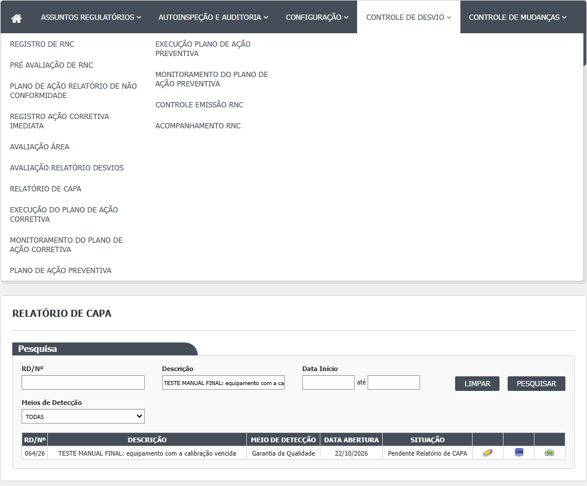
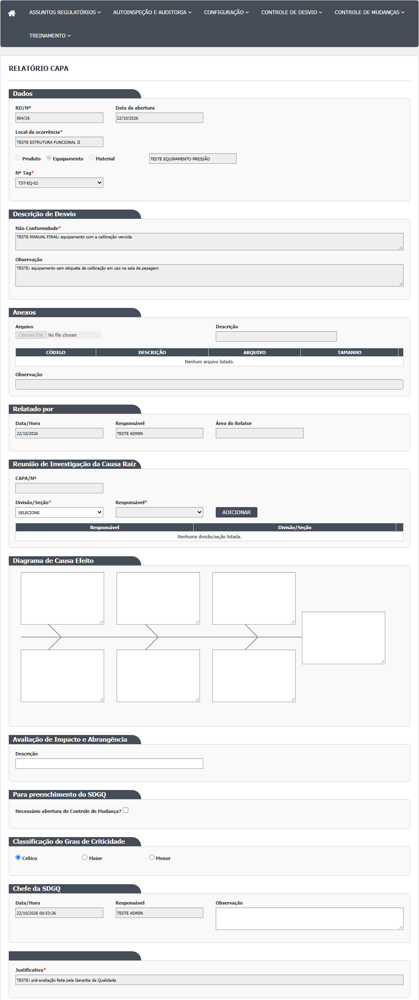
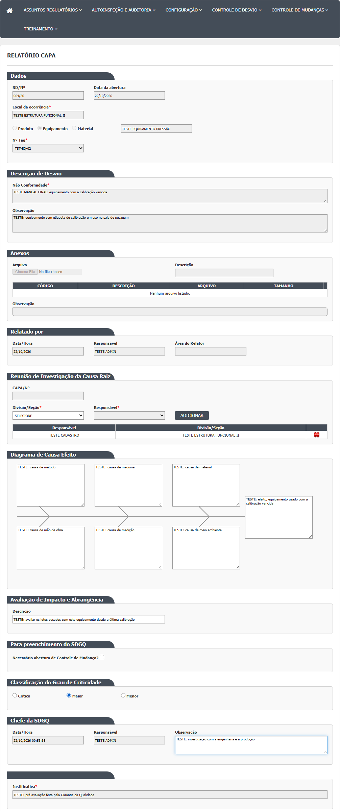
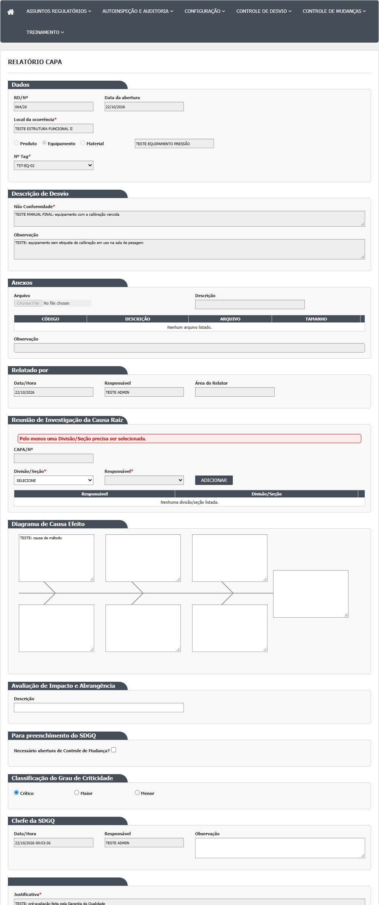
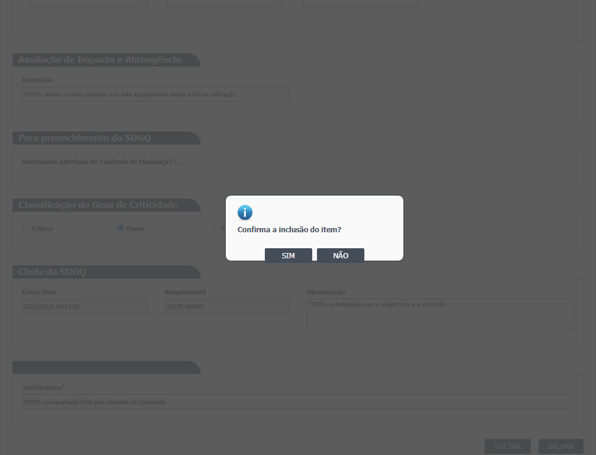
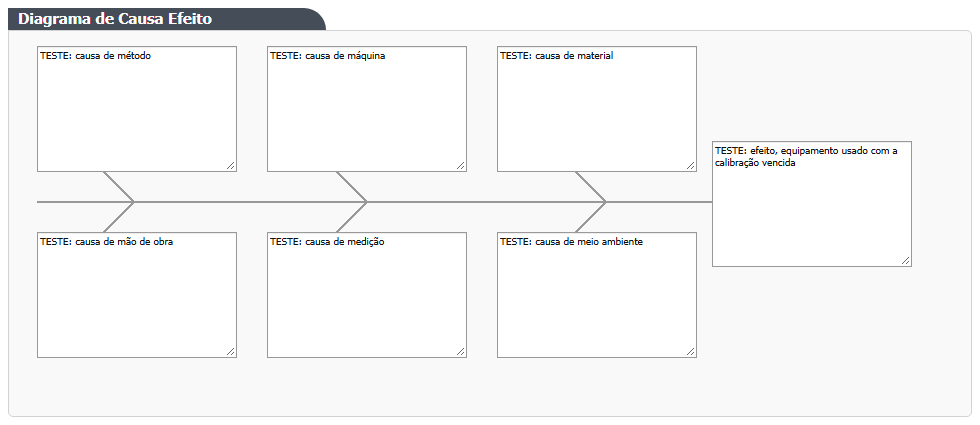
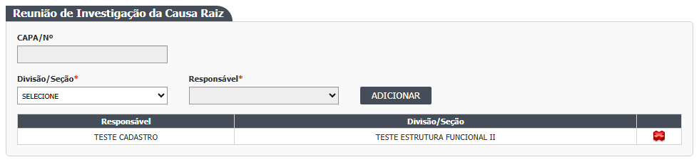
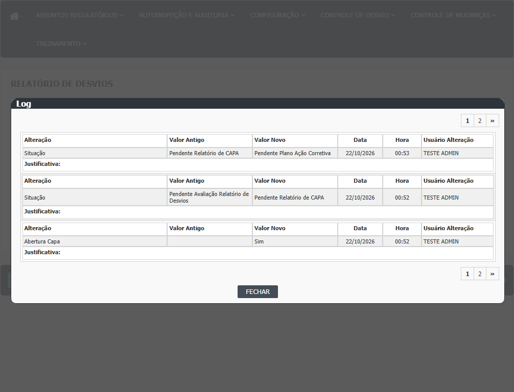
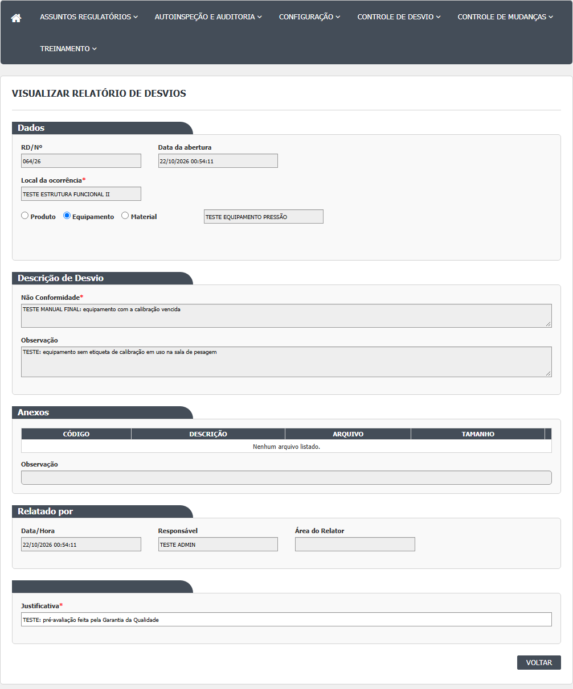

Parte 1. A lista (tela inicial)
-
No menu, clique em Controle de Desvios e depois em Relatório de CAPA. Abre a tela com o título "RELATÓRIO DE CAPA" e o quadro "Pesquisa" (
HSolutions.GQ.UI/Areas/Bloco2/Views/RelatorioCapa/Index.cshtml:5e:22). A lista abre vazia e só é preenchida ao clicar em Pesquisar. -
Preencha, se quiser, os filtros: RD/Nº (com máscara 999/99, por exemplo 009/26), Descrição (trecho), Data Início e até (dd/mm/aaaa, com calendário) e Meios de Detecção (TODAS ou um dos meios) (
HSolutions.GQ.UI/Areas/Bloco2/Views/RelatorioCapa/Index.cshtml:28-63;HSolutions.GQ.UI/Areas/Bloco2/Script/RelatorioCapaIndex.js:2-6). -
Clique em Pesquisar. A tabela mostra RD/Nº, DESCRIÇÃO, MEIO DE DETECÇÃO, DATA ABERTURA e SITUAÇÃO, com ícones em cada linha (
HSolutions.GQ.UI/Areas/Bloco2/Script/RelatorioCapaIndex.js:24-46). Só aparecem desvios em Pendente Relatório de CAPA. -
Ícones: lápis (Editar), histórico (Log) e impressora (Imprimir). Se o lápis não for oferecido, a lista mostra a lupa (Visualizar), mas essa ação não existe no controlador (ver "Falhas e pontos de atenção") (
HSolutions.GQ.UI/Helpers/GerenciadorAcessoTelaAvaliacaoRNCIndex.cs:15;HSolutions.GQ.UI/Scripts/HSGridApi.js:266-290). -
O botão Limpar esvazia os filtros e a tabela (
HSolutions.GQ.UI/Areas/Bloco2/Script/RelatorioCapaIndex.js:83-90).

Parte 2. Preencher o Relatório de CAPA (tela interna Editar)
-
Clique no lápis. Abre a tela "RELATÓRIO CAPA". Os blocos Dados, Descrição de Desvio e Anexos aparecem travados para leitura. Os blocos de preenchimento são: Reunião de Investigação da Causa Raiz, Diagrama de Causa Efeito, Avaliação de Impacto e Abrangência, Para preenchimento do SDGQ, Classificação do Grau de Criticidade e Chefe da SDGQ (
HSolutions.GQ.UI/Areas/Bloco2/Controllers/RelatorioCapaController.cs:119-153;HSolutions.GQ.UI/Areas/Bloco2/Views/RelatorioCapa/Editar.cshtml:33-37;HSolutions.GQ.UI/Areas/Bloco2/Views/Shared/_PartialRelatorioDesvio.cshtml:317-514). -
Em Reunião de Investigação da Causa Raiz: o campo CAPA/Nº fica vazio na primeira vez (o número só existe depois que a CAPA é gravada). Escolha a Divisão/Seção na lista; o campo Responsável passa a mostrar os usuários ativos daquela divisão; escolha um e clique em Adicionar. A pessoa entra na tabela abaixo (colunas Responsável e Divisão/Seção). Repita para outras divisões ou pessoas. É preciso ter pelo menos uma linha (
HSolutions.GQ.UI/Areas/Bloco2/Views/Shared/_PartialRelatorioDesvio.cshtml:319-400;HSolutions.GQ.UI/Areas/Bloco2/Script/PartialRelatorioDesvio.js:154-177). -
Se a divisão não tiver usuários ativos, aparece "Essa área não possui responsáveis." (
HSolutions.GQ.UI/Areas/Bloco2/Controllers/RelatorioCapaController.cs:284). Se você clicar em Adicionar sem escolher o responsável, nada acontece e nenhuma mensagem aparece (HSolutions.GQ.UI/Areas/Bloco2/Script/PartialRelatorioDesvio.js:156). -
Para tirar uma linha da tabela, clique no ícone de excluir dela (
HSolutions.GQ.UI/Areas/Bloco2/Views/Shared/_PartialRelatorioDesvio.cshtml:388-392;HSolutions.GQ.UI/Areas/Bloco2/Script/PartialRelatorioDesvio.js:218-231). -
Em Diagrama de Causa Efeito, escreva nas sete caixas de texto. Uma figura de espinha de peixe fica ao fundo; as seis caixas à esquerda são os ramos e a sétima, à direita, é a conclusão (comentário do código). As caixas não têm rótulo escrito. Todas as sete são obrigatórias (
HSolutions.GQ.UI/Areas/Bloco2/Views/Shared/_PartialRelatorioDesvio.cshtml:402-444;HSolutions.GQ.Domain/Service/RelatorioCapaValidator.cs:32-39). -
Em Avaliação de Impacto e Abrangência, escreva a descrição (não é obrigatória) (
HSolutions.GQ.UI/Areas/Bloco2/Views/Shared/_PartialRelatorioDesvio.cshtml:446-456). -
Em Para preenchimento do SDGQ aparece a caixa "Necessário abertura de Controle de Mudança?". Você pode marcá-la, mas esta tela não grava esse valor (
HSolutions.GQ.UI/Areas/Bloco2/Views/Shared/_PartialRelatorioDesvio.cshtml:458-468). -
Em Classificação do Grau de Criticidade, escolha Crítico, Maior ou Menor. A opção Crítico já vem marcada (
HSolutions.GQ.UI/Areas/Bloco2/Views/Shared/_PartialRelatorioDesvio.cshtml:470-488). -
Em Chefe da SDGQ, Data/Hora e Responsável aparecem travados (a data de agora e o seu nome, na primeira vez). A Observação é livre e opcional (
HSolutions.GQ.UI/Areas/Bloco2/Views/Shared/_PartialRelatorioDesvio.cshtml:490-513;HSolutions.GQ.UI/Areas/Bloco2/Models/PartialRelatorioDesvioModel.cs:295-299). -
O campo Justificativa aparece travado no fim da tela e não é gravado (
HSolutions.GQ.UI/Areas/Bloco2/Views/RelatorioCapa/Editar.cshtml:33;HSolutions.GQ.UI/Areas/Bloco2/Views/Shared/_PartialRelatorioDesvio.cshtml:839-843). -
Clique em Salvar e confirme com SIM na pergunta "Confirma a inclusão do item?" (
HSolutions.GQ.UI/Areas/Bloco2/Script/PartialRelatorioDesvio.js:377-378). -
Se faltar alguma coisa, aparece uma faixa de mensagem no bloco correspondente: "O diagrama deve ser totalmente preenchido." (bloco do diagrama) ou "Pelo menos uma Divisão/Seção precisa ser selecionada." (bloco da reunião). Quando há as duas falhas, a tela mostra apenas a última (ver "Falhas e pontos de atenção"). Nada é gravado.
-
Com tudo certo, abre "Alteração efetuada com sucesso." Ao clicar OK, volta à lista, e o desvio já está em Pendente Plano Ação Corretiva (
HSolutions.GQ.UI/Areas/Bloco2/Controllers/RelatorioCapaController.cs:220-231;HSolutions.GQ.UI/Areas/Bloco2/Script/PartialRelatorioDesvio.js:413-415). -
Voltar sai sem gravar (
HSolutions.GQ.UI/Areas/Bloco2/Script/PartialRelatorioDesvio.js:389-391).






Parte 3. Histórico e impressão
-
O ícone de histórico abre a janela Log com as alterações do desvio (
HSolutions.GQ.UI/Areas/Bloco2/Script/RelatorioCapaIndex.js:39-42). -
A impressora abre em outra aba o relatório do desvio (
HSolutions.GQ.UI/Areas/Bloco2/Controllers/RelatorioCapaController.cs:289-317).

Telas internas Visualizar, Incluir e Cancelar
- Visualizar: a lista tem a ação (lupa), mas o controlador não tem a ação
Visualizar. A view existente é cópia da tela de avaliação, escrita para outro controlador (HSolutions.GQ.UI/Areas/Bloco2/Script/RelatorioCapaIndex.js:35-38,:99-101;HSolutions.GQ.UI/Areas/Bloco2/Controllers/RelatorioCapaController.cs:36-321;HSolutions.GQ.UI/Areas/Bloco2/Views/RelatorioCapa/Visualizar.cshtml:3). Inferência: a lupa leva a erro de página não encontrada. A confirmar no teste. - Incluir e Cancelar: não existem nesta tela.

O que a rodada 1 (21/10/2026) mostrou sobre este manual
Fonte: execucao/2026-10-21-desvios-rodada-1/resultado.md.
- Passo 17 (recusas). Com o diagrama preenchido em 3 das 7 caixas, a tela mostrou "O diagrama deve ser totalmente preenchido.". Sem divisão, qualquer que fosse a combinação com o diagrama, mostrou só a última mensagem, "Pelo menos uma Divisão/Seção precisa ser selecionada.": quem erra nas duas coisas só descobre a primeira depois de corrigir a segunda (CT-GQ-017, DV-GQ-033).
- Passos 13 e 18 (criticidade e gravação). A criticidade veio como Crítico por padrão. Com o diagrama completo, Crítico e uma divisão, o desvio foi para Pendente Plano Ação Corretiva (CT-GQ-017). Não há campo para justificar erro humano.
- Passo 21 (impressão). O ícone de impressora da lista não abriu o relatório: a tela mostrou uma página de erro do servidor. Aconteceu em todos os desvios testados nas telas Relatório de Desvios, Registro Ação Corretiva Imediata e Relatório de CAPA. Os relatórios de Acompanhamento RD e de Controle de Emissão de RNC imprimem normalmente. Falta confirmar se o problema vem do servidor em que o teste rodou (DV-GQ-018).
- Passo 2 (filtros). RD/Nº: nesta tela o ano funciona: "036", "36" e "036/26" acham o desvio 036/26; "009/26" e "999" não acham (CT-GQ-N06-02). Meios de Detecção: filtra pelo meio escolhido; TODAS e Nenhum não filtram (CT-GQ-N06-03). Datas: só a Data Início traz os desvios daquele dia; início e fim iguais também; só a Data Fim é ignorada; data inválida (31/02/2026) é ignorada sem mensagem (CT-GQ-N06-04, DV-GQ-027).
- Passo 3 (lista). Com a massa de teste, a lista mostrou só os desvios 036/26 e 037/26, ambos em Pendente Relatório de CAPA (CT-GQ-N06-01).
- Não exercitados nesta rodada: o botão Limpar, o botão Adicionar sem responsável, a divisão sem usuários, a lupa, o histórico e o excluir da tabela da reunião.
Rodada 2 (22/10/2026)
Fonte: execucao/2026-10-22-desvios-rodada-2/resultado.md.
- Passo 17 (recusas). Com cada uma das sete caixas do diagrama deixada vazia, uma por vez (divisão e impacto preenchidos), a tela mostrou "O diagrama deve ser totalmente preenchido." nas sete, e nada foi gravado: o desvio continuou em Pendente Relatório de CAPA (036/26, CT-GQ-N06-05). Com o diagrama completo e nenhuma divisão, mostrou "Pelo menos uma Divisão/Seção precisa ser selecionada." (CT-GQ-N06-06).
- Passo 13 (criticidade). Sem mexer, a criticidade grava como Crítico; Maior (031/26) e Menor (068/26) também foram aceitos. Depois de salvar, nenhuma tela mostra o valor gravado: o histórico não traz, a impressão da CAPA dá erro (DV-GQ-018) e a coluna do Acompanhamento sai em branco (DV-GQ-031). Não dá para provar o que ficou guardado (CT-GQ-N06-10).
- Passo 18 (gravar a CAPA completa). Com as sete caixas, duas divisões com responsável, impacto, criticidade Crítico e observação, Salvar mostrou "Alteração efetuada com sucesso."; o desvio foi para Pendente Plano Ação Corretiva e saiu da lista desta tela (036/26, CT-GQ-N06-12). O mesmo aconteceu com 037/26, 031/26 e 068/26 (CT-GQ-022).
- Histórico (Parte 3). Depois de salvar, o histórico do desvio ganhou um único registro: a mudança de situação, de Pendente Relatório de CAPA para Pendente Plano Ação Corretiva. Não aparecem o diagrama, a criticidade, as divisões, o impacto, a observação nem a justificativa (036/26 e 037/26, CT-GQ-N06-16, DV-GQ-036).
- Controle de mudança. A caixa existe nesta tela e vem desmarcada (CT-GQ-N05-08).
- Não exercitados nesta rodada: impacto e observação vazios (CT-GQ-N06-11), o botão Adicionar sem responsável, a divisão sem usuários, a lupa e o excluir da tabela da reunião.
Rodada 3 (22/10/2026)
Fonte: execucao/2026-10-22-desvios-rodada-3b/resultado.md.
- Passo 7 (CAPA/Nº). O campo fica vazio e desabilitado antes e depois de salvar; o número da CAPA não aparece nele nem no histórico (078/26, CT-GQ-N06-13, caso bloqueado). A frase "o número só existe depois que a CAPA é gravada" não se confirma na tela.
- Passo 8 (divisão e responsável). Divisão sem usuários ativos (CENTRO DE CUSTO 2): "Essa área não possui responsáveis." e a lista de Responsável fica vazia e desabilitada (069/26, CT-GQ-N06-07). Adicionar sem escolher o responsável não faz nada e não avisa; a mesma pessoa duas vezes entra uma vez só, sem aviso (CT-GQ-N06-08).
- Passo 11 (impacto) e passo 14 (observação do chefe). Com a avaliação de impacto e a observação do chefe da SDGQ em branco, a CAPA é gravada e o desvio vai a Pendente Plano Ação Corretiva (080/26, CT-GQ-N06-11, DV-GQ-064).
- Passo 12 (controle de mudança). A caixa pode ser marcada e a tela salva com sucesso, mas o "Sim" não é guardado nem mostrado depois (079/26, CT-GQ-N06-15, DV-GQ-065).
- Passo 14 (bloco Chefe da SDGQ). Responsável e Data/Hora mostram o usuário conectado e o momento de abrir a tela; o histórico não traz esses dados da CAPA (084/26, CT-GQ-N06-20, DV-GQ-036).
- Passo 15 (Justificativa). O campo vem travado e já preenchido (CT-GQ-N06-21).
- Passo 16 (confirmação). NÃO na pergunta "Confirma a inclusão do item?" não grava; SIM grava e mostra "Alteração efetuada com sucesso." (084/26, CT-GQ-N06-21).
- Passo 17 (recusas). Cada tentativa de salvar mostra uma só mensagem: sem divisão e com uma caixa do diagrama vazia, só a da divisão; com a divisão e a caixa vazia, só a do diagrama (069/26, CT-GQ-N06-09, DV-GQ-033).
- Passo 21 (impressão). O ícone de impressora abre uma página de erro do servidor (069/26 e 078/26; CT-GQ-N06-13 e N06-17; DV-GQ-018). Os relatórios das três telas não puderam ser comparados.
Rodada 4 (22/10/2026)
Fonte: execucao/2026-10-22-desvios-rodada-4/resultado.md.
- Passo 17 (diagrama com texto longo). Com 5.000 caracteres em cada uma das sete caixas do diagrama, a tela gravou tudo e mostrou "Alteração efetuada com sucesso." (069/26, CT-GQ-N06-14). Não há limite de tamanho.
- Passo 8 (excluir uma pessoa da reunião). Com duas pessoas da mesma divisão na tabela, excluir uma tira as duas, e a tabela volta a mostrar "Nenhuma divisão/seção listada." Para tirar só uma, é preciso adicionar a outra de novo (069/26, CT-GQ-N06-18, DV-GQ-084).
- Passo 8 (voltar a "SELECIONE"). Escolher uma divisão e voltar à opção SELECIONE deixa o Responsável vazio e desabilitado, como esperado. Ao mesmo tempo ocorre um erro de script, que só aparece no console do navegador, sem mensagem para quem usa a tela (069/26, CT-GQ-N06-19).
- Erro humano (passos 11 a 14). A tela continua sem campo para justificar erro humano como causa: os blocos são os mesmos de antes (069/26, CT-GQ-N06-23).
- Cancelar e lupa. Não há botão de cancelar, nem na lista nem na tela (083/26, CT-GQ-N06-22). O que a lupa faz nesta lista não pôde ser testado como a página previa (o que a lista oferece a quem consulta está no documento interno); a inferência de "erro de página não encontrada" segue a confirmar.
- Passo 21 (impressão). A página de erro do servidor continua aparecendo (CT-GQ-N05-16, bloqueado; DV-GQ-018). O relatório impresso de CAPA, nas telas 7 a 12, sai com uma mensagem de erro do relatório no lugar da avaliação (DV-GQ-086, visto a partir da tela 7).
Campos da tela
Lista (tela inicial)
| Campo na tela | Tipo | Obrigatório | Regra, limite ou valores possíveis | Fonte (arquivo:linha) |
|---|---|---|---|---|
| RD/Nº (filtro) | Texto com máscara 999/99 | Não | Número e ano em dois dígitos (009/26). O servidor separa o que vem antes e depois da barra: procura o trecho no número e filtra o ano (20 + dois dígitos). Confirmado em 21/10/2026 (CT-GQ-N06-02, CT-GQ-F16): "036", "36" e "036/26" acham; "009/26" e "999" não | HSolutions.GQ.UI/Areas/Bloco2/Views/RelatorioCapa/Index.cshtml:28-29; HSolutions.GQ.UI/Areas/Bloco2/Script/RelatorioCapaIndex.js:6; HSolutions.GQ.UI/Areas/Bloco2/Controllers/RelatorioCapaController.cs:63-73 |
| Descrição (filtro) | Texto | Não | Procura o trecho na descrição | HSolutions.GQ.UI/Areas/Bloco2/Views/RelatorioCapa/Index.cshtml:33-34; HSolutions.GQ.UI/Areas/Bloco2/Controllers/RelatorioCapaController.cs:75-76 |
| Data Início (filtro) | Data com calendário e máscara dd/mm/aaaa | Não | Sozinha: um dia. Com Data fim: intervalo. Confirmado em 21/10/2026 (CT-GQ-N06-04, CT-GQ-F07 e F08). Data inválida (31/02/2026) é ignorada sem aviso (DV-GQ-027) | HSolutions.GQ.UI/Areas/Bloco2/Views/RelatorioCapa/Index.cshtml:38-40; HSolutions.GQ.UI/Areas/Bloco2/Script/RelatorioCapaIndex.js:2-3; HSolutions.GQ.UI/Areas/Bloco2/Controllers/RelatorioCapaController.cs:78-90 |
| até / Data fim (filtro) | Data com calendário e máscara dd/mm/aaaa | Não | Sozinha, é ignorada. Confirmado em 21/10/2026 (CT-GQ-N06-04) | HSolutions.GQ.UI/Areas/Bloco2/Views/RelatorioCapa/Index.cshtml:43-44; HSolutions.GQ.UI/Areas/Bloco2/Script/RelatorioCapaIndex.js:4-5; HSolutions.GQ.UI/Areas/Bloco2/Controllers/RelatorioCapaController.cs:78 |
| Meios de Detecção (filtro) | Lista | Não | TODAS (0), Nenhum (0), Processo/Produção (1), Auditoria Interna (2), Inspeção Sanitária (3), Controle da Qualidade (4), Garantia da Qualidade (5), SAC/Fármaco (6), Outros (99). "TODAS" e "Nenhum" têm o mesmo valor 0 e não filtram. Confirmado em 21/10/2026 (CT-GQ-N06-03) | HSolutions.GQ.UI/Areas/Bloco2/Views/RelatorioCapa/Index.cshtml:57-63; HSolutions.GQ.UI/Areas/Bloco2/Models/RelatorioCapaIndexModel.cs:20; HSolutions.GQ.UI/Helpers/HelperMeiosDeteccao.cs:20-36; HSolutions.GQ.Domain/Enumeradores/TipoMetodoDeteccaoNaoConformidade.cs:13-27; HSolutions.GQ.UI/Areas/Bloco2/Controllers/RelatorioCapaController.cs:92-96 |
| Coluna RD/Nº | Texto | Sem entrada | Número com ano (009/26) | HSolutions.GQ.UI/Areas/Bloco2/Script/RelatorioCapaIndex.js:25; HSolutions.GQ.UI/Areas/Bloco2/Models/RelatorioCapaResultadoIndexModel.cs:43 |
| Coluna DESCRIÇÃO | Texto | Sem entrada | Descrição do desvio | HSolutions.GQ.UI/Areas/Bloco2/Script/RelatorioCapaIndex.js:26 |
| Coluna MEIO DE DETECÇÃO | Texto | Sem entrada | Meio escolhido na pré-avaliação | HSolutions.GQ.UI/Areas/Bloco2/Script/RelatorioCapaIndex.js:27; HSolutions.GQ.UI/Areas/Bloco2/Models/RelatorioCapaResultadoIndexModel.cs:45 |
| Coluna DATA ABERTURA | Data | Sem entrada | Data de criação, dd/MM/aaaa | HSolutions.GQ.UI/Areas/Bloco2/Script/RelatorioCapaIndex.js:28; HSolutions.GQ.UI/Areas/Bloco2/Models/RelatorioCapaResultadoIndexModel.cs:23-28 |
| Coluna SITUAÇÃO | Texto | Sem entrada | Sempre "Pendente Relatório de CAPA" | HSolutions.GQ.UI/Areas/Bloco2/Script/RelatorioCapaIndex.js:29; HSolutions.GQ.UI/Areas/Bloco2/Models/RelatorioCapaResultadoIndexModel.cs:47 |
| Coluna Id | Número, oculta | Sem entrada | Vai no endereço do lápis | HSolutions.GQ.UI/Areas/Bloco2/Script/RelatorioCapaIndex.js:24 |
Tela interna Editar (formulário comum)
Nesta tela, os blocos Dados, Descrição de Desvio, Anexos e Justificativa são travados por script (HSolutions.GQ.UI/Areas/Bloco2/Views/RelatorioCapa/Editar.cshtml:33); os blocos da CAPA ficam livres.
| Campo na tela | Tipo | Obrigatório | Regra, limite ou valores possíveis | Fonte (arquivo:linha) |
|---|---|---|---|---|
| Dados > RD/Nº | Texto travado | Não | Número com ano | HSolutions.GQ.UI/Areas/Bloco2/Views/Shared/_PartialRelatorioDesvio.cshtml:91-92; HSolutions.GQ.UI/Areas/Bloco2/Models/PartialRelatorioDesvioModel.cs:190 |
| Dados > Data da abertura | Texto travado | Não | Data de criação do desvio (nesta tela, o código troca a data de agora pela real) | HSolutions.GQ.UI/Areas/Bloco2/Views/Shared/_PartialRelatorioDesvio.cshtml:95-96; HSolutions.GQ.UI/Areas/Bloco2/Models/PartialRelatorioDesvioModel.cs:302 |
| Dados > Local da ocorrência | Texto travado | Asterisco | Vem do registro | HSolutions.GQ.UI/Areas/Bloco2/Views/Shared/_PartialRelatorioDesvio.cshtml:102-103 |
| Dados > Tipo de item | Opção única: Produto, Equipamento, Material | Não | Travada | HSolutions.GQ.UI/Areas/Bloco2/Views/Shared/_PartialRelatorioDesvio.cshtml:112-127; HSolutions.GQ.UI/Areas/Bloco2/Models/PartialRelatorioDesvioModel.cs:147-148 |
| Dados > item | Texto travado | Não | Descrição do item | HSolutions.GQ.UI/Areas/Bloco2/Views/Shared/_PartialRelatorioDesvio.cshtml:130 |
| Dados > Nº Lote, Registro de entrada, Adicionar, buscar | Lista e botões | Asterisco | Escondidos | HSolutions.GQ.UI/Areas/Bloco2/Views/Shared/_PartialRelatorioDesvio.cshtml:143-181; HSolutions.GQ.UI/Areas/Bloco2/Views/RelatorioCapa/Editar.cshtml:34-36 |
| Dados > Nº Tag | Lista travada | Asterisco | Só para equipamento | HSolutions.GQ.UI/Areas/Bloco2/Views/Shared/_PartialRelatorioDesvio.cshtml:151-154 |
| Dados > tabela de lotes | Tabela | Não | Lotes copiados no registro | HSolutions.GQ.UI/Areas/Bloco2/Views/Shared/_PartialRelatorioDesvio.cshtml:178 |
| Descrição de Desvio > Não Conformidade | Texto longo (3 linhas) | Asterisco | Travado | HSolutions.GQ.UI/Areas/Bloco2/Views/Shared/_PartialRelatorioDesvio.cshtml:191-192 |
| Descrição de Desvio > Observação | Texto longo (4 linhas) | Não | Travado | HSolutions.GQ.UI/Areas/Bloco2/Views/Shared/_PartialRelatorioDesvio.cshtml:198-199 |
| Anexos > Arquivo e Descrição | Seleção de arquivo e texto | Não | Travados; Enviar escondido | HSolutions.GQ.UI/Views/Shared/_UploadArquivo.cshtml:76, :82; HSolutions.GQ.UI/Areas/Bloco2/Views/RelatorioCapa/Editar.cshtml:36 |
| Anexos > tabela (CÓDIGO, DESCRIÇÃO, ARQUIVO, TAMANHO) | Tabela | Não | Só abrir; excluir escondido | HSolutions.GQ.UI/Views/Shared/_GridAnexos.cshtml:5-60; HSolutions.GQ.UI/Areas/Bloco2/Views/RelatorioCapa/Editar.cshtml:37 |
| Anexos > Observação | Texto travado | Não | Observação do anexo | HSolutions.GQ.UI/Areas/Bloco2/Views/Shared/_PartialRelatorioDesvio.cshtml:231-232 |
| Relatado por > Data/Hora | Texto travado | Não | Data de criação do desvio | HSolutions.GQ.UI/Areas/Bloco2/Views/Shared/_PartialRelatorioDesvio.cshtml:244-245; HSolutions.GQ.UI/Areas/Bloco2/Models/PartialRelatorioDesvioModel.cs:302 |
| Relatado por > Responsável | Texto travado | Não | Quem criou o desvio | HSolutions.GQ.UI/Areas/Bloco2/Views/Shared/_PartialRelatorioDesvio.cshtml:249-250; HSolutions.GQ.UI/Areas/Bloco2/Models/PartialRelatorioDesvioModel.cs:301 |
| Relatado por > Área do Relator | Texto travado | Não | Área de quem registrou | HSolutions.GQ.UI/Areas/Bloco2/Views/Shared/_PartialRelatorioDesvio.cshtml:254-255; HSolutions.GQ.UI/Areas/Bloco2/Models/PartialRelatorioDesvioModel.cs:178 |
| Reunião > CAPA/Nº | Texto travado | Não | Número da CAPA com 4 dígitos (0001). Vazio até a CAPA ser gravada | HSolutions.GQ.UI/Areas/Bloco2/Views/Shared/_PartialRelatorioDesvio.cshtml:326-327; HSolutions.GQ.Domain/Entities/Bloco2/ControleDesvios/RelatorioCapa.cs:13-26; HSolutions.GQ.UI/Areas/Bloco2/Models/PartialRelatorioDesvioModel.cs:284 |
| Reunião > Divisão/Seção | Lista (com "SELECIONE") | Sim (asterisco; pelo menos uma linha na tabela) | Locais do Principal que têm responsável. Escolher dispara a busca de responsáveis | HSolutions.GQ.UI/Areas/Bloco2/Views/Shared/_PartialRelatorioDesvio.cshtml:332-333; HSolutions.GQ.UI/Areas/Bloco2/Models/PartialRelatorioDesvioModel.cs:304-317; HSolutions.GQ.UI/Areas/Bloco2/Script/PartialRelatorioDesvio.js:92 |
| Reunião > Responsável | Lista | Sim (asterisco) | Desabilitada até escolher a divisão. Mostra usuários ativos cuja Divisão é a escolhida. A primeira opção é "SELECIONE" | HSolutions.GQ.UI/Areas/Bloco2/Views/Shared/_PartialRelatorioDesvio.cshtml:336-338; HSolutions.GQ.UI/Areas/Bloco2/Controllers/RelatorioCapaController.cs:263-287; 1.principal/app/LaboSys_UI/Api/UsuarioController.cs:327-343 |
| Reunião > Adicionar | Botão | Não | Só age quando divisão e responsável estão escolhidos; nada avisa quando faltam. Não aceita a mesma pessoa duas vezes na mesma divisão | HSolutions.GQ.UI/Areas/Bloco2/Views/Shared/_PartialRelatorioDesvio.cshtml:343; HSolutions.GQ.UI/Areas/Bloco2/Script/PartialRelatorioDesvio.js:154-177, :198-216 |
| Reunião > tabela (Responsável, Divisão/Seção, excluir) | Tabela | Pelo menos uma linha | Mensagem vazia "Nenhuma divisão/seção listada." | HSolutions.GQ.UI/Areas/Bloco2/Views/Shared/_PartialRelatorioDesvio.cshtml:349-397; HSolutions.GQ.UI/Areas/Bloco2/Script/PartialRelatorioDesvio.js:233-254 |
| Diagrama de Causa Efeito > caixa 1 (txtDiagrama1) | Texto longo (10 linhas) | Sim | Sem rótulo escrito; sem limite no código | HSolutions.GQ.UI/Areas/Bloco2/Views/Shared/_PartialRelatorioDesvio.cshtml:415; HSolutions.GQ.Domain/Service/RelatorioCapaValidator.cs:32-39; Hsolutions.GQ.DB/Tables/TBL_RELATORIO_CAPA.sql:3 |
| Diagrama > caixa 2 (txtDiagrama2) | Texto longo (10 linhas) | Sim | Idem | HSolutions.GQ.UI/Areas/Bloco2/Views/Shared/_PartialRelatorioDesvio.cshtml:418 |
| Diagrama > caixa 3 (txtDiagrama3) | Texto longo (10 linhas) | Sim | Idem | HSolutions.GQ.UI/Areas/Bloco2/Views/Shared/_PartialRelatorioDesvio.cshtml:421 |
| Diagrama > caixa 4 (txtDiagrama4) | Texto longo (10 linhas) | Sim | Idem | HSolutions.GQ.UI/Areas/Bloco2/Views/Shared/_PartialRelatorioDesvio.cshtml:426 |
| Diagrama > caixa 5 (txtDiagrama5) | Texto longo (10 linhas) | Sim | Idem | HSolutions.GQ.UI/Areas/Bloco2/Views/Shared/_PartialRelatorioDesvio.cshtml:429 |
| Diagrama > caixa 6 (txtDiagrama6) | Texto longo (10 linhas) | Sim | Idem | HSolutions.GQ.UI/Areas/Bloco2/Views/Shared/_PartialRelatorioDesvio.cshtml:432 |
| Diagrama > caixa 7 (txtDiagrama7, conclusão) | Texto longo (10 linhas) | Sim | Fica à direita; o código a chama de "conclusão" | HSolutions.GQ.UI/Areas/Bloco2/Views/Shared/_PartialRelatorioDesvio.cshtml:437-439 |
| Avaliação de Impacto e Abrangência > Descrição | Texto | Não | Sem limite no código | HSolutions.GQ.UI/Areas/Bloco2/Views/Shared/_PartialRelatorioDesvio.cshtml:451-452; HSolutions.GQ.Domain/Service/RelatorioCapaValidator.cs:23-47 |
| Para preenchimento do SDGQ > Necessário abertura de Controle de Mudança? | Caixa de marcação | Não | Pode ser marcada, mas o servidor não lê o valor. Confirmado em 21/10/2026 que a caixa existe aqui e não tem efeito: nenhuma solicitação de mudança foi aberta (CT-GQ-016) | HSolutions.GQ.UI/Areas/Bloco2/Views/Shared/_PartialRelatorioDesvio.cshtml:463-464; HSolutions.GQ.UI/Areas/Bloco2/Controllers/RelatorioCapaController.cs:156-250 |
| Classificação do Grau de Criticidade | Opção única: Crítico (0), Maior (1), Menor (2) | Sim, na prática (Crítico vem marcado) | Sem escolha, vale Crítico, o valor zero do enum. Confirmado em 21/10/2026: a opção Crítico vem marcada (CT-GQ-017). Em 22/10/2026 (CT-GQ-N06-10): sem mexer, grava Crítico; Maior e Menor também foram aceitos, mas nenhuma tela mostra o valor gravado | HSolutions.GQ.UI/Areas/Bloco2/Views/Shared/_PartialRelatorioDesvio.cshtml:475-484; HSolutions.GQ.Domain/Enumeradores/TipoCriticidade.cs:13-17; HSolutions.GQ.Domain/Entities/Bloco2/ControleDesvios/RelatorioCapa.cs:38 |
| Chefe da SDGQ > Data/Hora | Texto travado | Não | Primeira vez: data de agora. Depois: data gravada | HSolutions.GQ.UI/Areas/Bloco2/Views/Shared/_PartialRelatorioDesvio.cshtml:495-496; HSolutions.GQ.UI/Areas/Bloco2/Models/PartialRelatorioDesvioModel.cs:275, :298 |
| Chefe da SDGQ > Responsável | Texto travado | Não | Primeira vez: o usuário que abriu a tela. É este texto que o servidor grava como responsável | HSolutions.GQ.UI/Areas/Bloco2/Views/Shared/_PartialRelatorioDesvio.cshtml:500-501; HSolutions.GQ.UI/Areas/Bloco2/Models/PartialRelatorioDesvioModel.cs:297; HSolutions.GQ.UI/Areas/Bloco2/Controllers/RelatorioCapaController.cs:171 |
| Chefe da SDGQ > Observação | Texto longo (4 linhas) | Não | Livre | HSolutions.GQ.UI/Areas/Bloco2/Views/Shared/_PartialRelatorioDesvio.cshtml:505-507; HSolutions.GQ.UI/Areas/Bloco2/Controllers/RelatorioCapaController.cs:181 |
| Justificativa | Texto travado | Marcado com asterisco | Travado pelo script; não é gravado | HSolutions.GQ.UI/Areas/Bloco2/Views/Shared/_PartialRelatorioDesvio.cshtml:842-843; HSolutions.GQ.UI/Areas/Bloco2/Views/RelatorioCapa/Editar.cshtml:33 |
| Campos ocultos (hfId, hfIdLocalOcorrencia, hfIdAreaEnvolvida, hfEAcaoImediata, hfDisableFields, hfActionType, hfDisabledSalvar, hfSituacaoAtual) | Ocultos | Sem entrada | Levam o número do desvio e o estado da tela | HSolutions.GQ.UI/Areas/Bloco2/Views/Shared/_PartialRelatorioDesvio.cshtml:75-82 |
| Janelas "Locais" e "Itens" | Janelas ocultas | Sem entrada | Nunca abrem nesta tela | HSolutions.GQ.UI/Areas/Bloco2/Views/Shared/_PartialRelatorioDesvio.cshtml:867-888 |
Nesta tela não aparecem os blocos Meios de Detecção do Desvio e Ação Corretiva Imediata (HSolutions.GQ.UI/Areas/Bloco2/Views/Shared/_PartialRelatorioDesvio.cshtml:264-265, :517-520).
Rodada 2 (22/10/2026)
Fonte: execucao/2026-10-22-desvios-rodada-2/resultado.md. O que a tela mostrou de novo ou contrariou nos campos:
| Campo na tela | O que a rodada 2 mostrou |
|---|---|
| Diagrama de causa e efeito (sete caixas) | Qualquer caixa vazia recusa o Salvar com "O diagrama deve ser totalmente preenchido."; testadas as sete, uma por vez (CT-GQ-N06-05) |
| Reunião > tabela (Divisão/Seção) | Sem nenhuma linha, Salvar recusa com "Pelo menos uma Divisão/Seção precisa ser selecionada." (CT-GQ-N06-06). Com duas divisões e responsável, grava (CT-GQ-N06-12) |
| Classificação do Grau de Criticidade | Vem como Crítico; Maior e Menor são aceitos. O valor gravado não aparece no histórico, na impressão da CAPA (erro) nem na coluna do Acompanhamento (em branco, DV-GQ-031) (CT-GQ-N06-10) |
| Necessário abertura de Controle de Mudança? | Existe e vem desmarcada (CT-GQ-N05-08) |
Rodada 3 (22/10/2026)
Fonte: execucao/2026-10-22-desvios-rodada-3b/resultado.md. O que a tela mostrou de novo ou contrariou nos campos:
| Campo na tela | O que a rodada 3 mostrou |
|---|---|
| Reunião > CAPA/Nº | Vazio e desabilitado antes e depois de salvar; o número não aparece (CT-GQ-N06-13, caso bloqueado) |
| Reunião > Responsável | Com a divisão sem usuários ativos, a lista fica vazia e desabilitada (CT-GQ-N06-07) |
| Reunião > Adicionar | Sem responsável escolhido, não faz nada e não avisa; a mesma pessoa duas vezes entra uma vez só, sem aviso (CT-GQ-N06-08) |
| Avaliação de Impacto e Abrangência > Descrição e Chefe da SDGQ > Observação | Em branco, a CAPA é gravada (CT-GQ-N06-11, DV-GQ-064) |
| Necessário abertura de Controle de Mudança? | Marcada, grava sem erro; o "Sim" não é guardado nem mostrado (CT-GQ-N06-15, DV-GQ-065) |
| Chefe da SDGQ > Data/Hora e Responsável | Mostram o usuário conectado e o momento de abrir a tela (CT-GQ-N06-20) |
| Justificativa | Vem travada e já preenchida (CT-GQ-N06-21) |
Rodada 4 (22/10/2026)
Fonte: execucao/2026-10-22-desvios-rodada-4/resultado.md. O que a tela mostrou de novo ou contrariou nos campos:
| Campo na tela | O que a rodada 4 mostrou |
|---|---|
| Diagrama de causa e efeito (sete caixas) | 5.000 caracteres em cada caixa: gravados inteiros, "Alteração efetuada com sucesso." (069/26, CT-GQ-N06-14) |
| Reunião > tabela (Divisão/Seção), Excluir | Excluir uma de duas pessoas da mesma divisão tira as duas; a tabela mostra "Nenhuma divisão/seção listada." (069/26, CT-GQ-N06-18, DV-GQ-084) |
| Reunião > Divisão/Seção ao voltar a SELECIONE | Responsável fica vazio e desabilitado; há erro de script no console (069/26, CT-GQ-N06-19) |
| Erro humano | Continua sem campo para justificar (069/26, CT-GQ-N06-23) |
Botões e ações
| Botão ou ação | Quando aparece | O que faz | Para onde leva o desvio | Fonte |
|---|---|---|---|---|
| Pesquisar | Sempre, na lista | Lista os desvios em Pendente Relatório de CAPA, aplicando os filtros | Não muda | HSolutions.GQ.UI/Areas/Bloco2/Views/RelatorioCapa/Index.cshtml:50; HSolutions.GQ.UI/Areas/Bloco2/Controllers/RelatorioCapaController.cs:49-115 |
| Limpar | Sempre, na lista | Esvazia os filtros e a tabela | Não muda | HSolutions.GQ.UI/Areas/Bloco2/Views/RelatorioCapa/Index.cshtml:49; HSolutions.GQ.UI/Areas/Bloco2/Script/RelatorioCapaIndex.js:83-90 |
| Editar (lápis) | Desvio em Pendente Relatório de CAPA | Abre a tela de preenchimento | Não muda ao abrir | HSolutions.GQ.UI/Helpers/GerenciadorAcessoTelaAvaliacaoRNCIndex.cs:15; HSolutions.GQ.UI/Scripts/HSGridApi.js:266-276; HSolutions.GQ.UI/Areas/Bloco2/Controllers/RelatorioCapaController.cs:119-153 |
| Visualizar (lupa) | Quando o lápis não é oferecido | Tenta abrir uma tela que o controlador não tem | Não se aplica | HSolutions.GQ.UI/Areas/Bloco2/Script/RelatorioCapaIndex.js:35-38, :99-101; HSolutions.GQ.UI/Scripts/HSGridApi.js:277-290 |
| Log (histórico) | Todas as linhas | Abre a janela com as alterações | Não muda | HSolutions.GQ.UI/Areas/Bloco2/Script/RelatorioCapaIndex.js:39-42 |
| Imprimir | Todas as linhas | Deveria gerar o relatório do desvio em outra aba. Em 21/10/2026 abriu uma página de erro do servidor (DV-GQ-018) | Não muda | HSolutions.GQ.UI/Areas/Bloco2/Script/RelatorioCapaIndex.js:43-46, :103-105; HSolutions.GQ.UI/Areas/Bloco2/Controllers/RelatorioCapaController.cs:289-317 |
| Divisão/Seção (lista) | Tela Editar | Ao escolher, busca os responsáveis da divisão | Não muda | HSolutions.GQ.UI/Areas/Bloco2/Script/PartialRelatorioDesvio.js:92, :256-293; HSolutions.GQ.UI/Areas/Bloco2/Controllers/RelatorioCapaController.cs:263-287 |
| Adicionar | Tela Editar | Põe a pessoa e a divisão na tabela da reunião | Não muda até salvar | HSolutions.GQ.UI/Areas/Bloco2/Views/Shared/_PartialRelatorioDesvio.cshtml:343; HSolutions.GQ.UI/Areas/Bloco2/Script/PartialRelatorioDesvio.js:154-177 |
| Excluir (na tabela da reunião) | Tela Editar, em cada linha | Tira a linha da tabela | Não muda até salvar | HSolutions.GQ.UI/Areas/Bloco2/Views/Shared/_PartialRelatorioDesvio.cshtml:388-392; HSolutions.GQ.UI/Areas/Bloco2/Script/PartialRelatorioDesvio.js:218-231 |
| Salvar | Tela Editar, desvio em Pendente Relatório de CAPA | Pede confirmação, confere o diagrama e as divisões e grava o relatório | Pendente Plano Ação Corretiva | HSolutions.GQ.UI/Areas/Bloco2/Views/Shared/_PartialRelatorioDesvio.cshtml:855-858; HSolutions.GQ.UI/Areas/Bloco2/Script/PartialRelatorioDesvio.js:295-378; HSolutions.GQ.UI/Areas/Bloco2/Controllers/RelatorioCapaController.cs:155-250 |
| SIM / NÃO (confirmação) | Ao clicar em Salvar | SIM envia a gravação; NÃO não faz nada | Sem mudança com NÃO | HSolutions.GQ.UI/Views/Shared/_ConfirmacaoPopUpPartail.cshtml:8-9; HSolutions.GQ.UI/Areas/Bloco2/Script/PartialRelatorioDesvio.js:394-405 |
| OK (resultado) | Depois da gravação | Fecha o aviso; no sucesso volta à lista | Sem mudança | HSolutions.GQ.UI/Views/Shared/_SucessoErrorPopUpPartail.cshtml:32-40; HSolutions.GQ.UI/Areas/Bloco2/Script/PartialRelatorioDesvio.js:413-415 |
| Voltar | Tela Editar | Volta à lista sem gravar | Sem mudança | HSolutions.GQ.UI/Areas/Bloco2/Views/Shared/_PartialRelatorioDesvio.cshtml:854; HSolutions.GQ.UI/Areas/Bloco2/Script/PartialRelatorioDesvio.js:389-391 |
| Ícone de anexo | Em cada anexo | Abre o arquivo | Sem mudança | HSolutions.GQ.UI/Views/Shared/_GridAnexos.cshtml:56-60 |
| Caixa de Controle de Mudança | Tela Editar | Pode ser marcada, sem efeito ao salvar | Sem mudança | HSolutions.GQ.UI/Areas/Bloco2/Views/Shared/_PartialRelatorioDesvio.cshtml:464 |
| Cancelar o desvio, Incluir | Não existem nesta tela | Não se aplicam | Não se aplicam | HSolutions.GQ.UI/Areas/Bloco2/Controllers/RelatorioCapaController.cs:36-321 |
Rodada 2 (22/10/2026)
Fonte: execucao/2026-10-22-desvios-rodada-2/resultado.md.
- Salvar com a CAPA completa: leva o desvio a Pendente Plano Ação Corretiva e ele sai da lista desta tela (CT-GQ-N06-12, CT-GQ-022).
- Salvar com uma caixa do diagrama vazia ou sem divisão: não grava e o desvio continua em Pendente Relatório de CAPA (CT-GQ-N06-05 e N06-06).
- Log (histórico): abre com um único registro, a mudança de situação (CT-GQ-N06-16).
- Imprimir: não foi conferido nesta rodada; a impressão dá erro (DV-GQ-018).
Rodada 3 (22/10/2026)
Fonte: execucao/2026-10-22-desvios-rodada-3b/resultado.md.
- Adicionar: sem responsável escolhido, nada acontece e nada é dito; a mesma pessoa duas vezes entra uma vez só (CT-GQ-N06-08).
- Salvar e SIM / NÃO: NÃO não grava; SIM grava e leva o desvio a Pendente Plano Ação Corretiva (CT-GQ-N06-21). Com impacto e observação em branco também grava (CT-GQ-N06-11).
- Imprimir (lista): abre uma página de erro do servidor (CT-GQ-N06-13 e N06-17; DV-GQ-018).
- Caixa de Controle de Mudança: pode ser marcada; a gravação acontece, mas o valor não é guardado (CT-GQ-N06-15).
- Log (histórico): traz só a mudança de situação (CT-GQ-N06-13 e N06-20).
Rodada 4 (22/10/2026)
Fonte: execucao/2026-10-22-desvios-rodada-4/resultado.md.
- Excluir (tabela da reunião): tira todas as linhas da mesma divisão, não só a clicada (CT-GQ-N06-18, DV-GQ-084).
- Divisão/Seção, opção SELECIONE: esvazia e desabilita o Responsável, mas com erro de script no console (CT-GQ-N06-19).
- Salvar com textos longos: grava 5.000 caracteres em cada caixa do diagrama (CT-GQ-N06-14).
- Cancelar o desvio: não existe, nem na lista nem na tela (CT-GQ-N06-22). A lupa não pôde ser exercitada como o caso previa (ver documento interno).
- Imprimir: continua abrindo a página de erro do servidor (CT-GQ-N05-16, bloqueado; DV-GQ-018).
Mensagens do sistema
| Mensagem (texto exato do código) | Quando aparece | Fonte |
|---|---|---|
| O diagrama deve ser totalmente preenchido. | Salvar com qualquer uma das sete caixas vazia (aparece no bloco do diagrama) | HSolutions.GQ.Domain/Service/RelatorioCapaValidator.cs:37; HSolutions.GQ.UI/Areas/Bloco2/Script/PartialRelatorioDesvio.js:490-494 |
| Pelo menos uma Divisão/Seção precisa ser selecionada. | Salvar sem nenhuma pessoa na tabela da reunião (aparece no bloco da reunião) | HSolutions.GQ.Domain/Service/RelatorioCapaValidator.cs:43; HSolutions.GQ.UI/Areas/Bloco2/Script/PartialRelatorioDesvio.js:496-500 |
| Entidade de domínio não pode ser nula. | Desvio ou CAPA não encontrados na validação | HSolutions.GQ.Domain/Service/RelatorioCapaValidator.cs:17, :27 |
| Essa área não possui responsáveis. | Divisão escolhida sem usuários ativos | HSolutions.GQ.UI/Areas/Bloco2/Controllers/RelatorioCapaController.cs:284; HSolutions.GQ.UI/Areas/Bloco2/Script/PartialRelatorioDesvio.js:283-285 |
| Nenhuma divisão/seção listada. | Tabela da reunião vazia | HSolutions.GQ.UI/Areas/Bloco2/Views/Shared/_PartialRelatorioDesvio.cshtml:369; HSolutions.GQ.UI/Areas/Bloco2/Script/PartialRelatorioDesvio.js:251 |
| Confirma a inclusão do item? | Ao clicar em Salvar (fala em "inclusão", mesmo sendo alteração) | HSolutions.GQ.UI/Areas/Bloco2/Script/PartialRelatorioDesvio.js:377 |
| Alteração efetuada com sucesso. | Gravação concluída | HSolutions.GQ.UI/Controllers/GQControllerBase.cs:95; HSolutions.GQ.UI/Areas/Bloco2/Controllers/RelatorioCapaController.cs:229 |
| Ocorreu um erro inesperado. | Falha ao salvar ou ao abrir a tela (volta à lista) | HSolutions.GQ.UI/Controllers/GQControllerBase.cs:93; HSolutions.GQ.UI/Areas/Bloco2/Controllers/RelatorioCapaController.cs:150, :247 |
| Ocorreu um erro interno não esperado. | A chamada ao servidor falha | HSolutions.GQ.UI/Scripts/HSApi.js:23 |
| A pesquisa não retornou nenhum resultado. | A lista volta sem linhas | HSolutions.GQ.UI/Scripts/HSGridApi.js:209 |
| Não foi possível obter os relatórios de não conformidades | Erro ao pesquisar | HSolutions.GQ.UI/Areas/Bloco2/Controllers/RelatorioCapaController.cs:113 |
| Não foi possível imprimir a solicitação de mudança | Erro ao imprimir (texto trocado: é uma cópia do código de outra tela; fala em "solicitação de mudança"). Em 21/10/2026 esta mensagem não apareceu: a tela mostrou a página de erro abaixo | HSolutions.GQ.UI/Areas/Bloco2/Controllers/RelatorioCapaController.cs:315 |
| Página de erro do servidor | Página de erro ao clicar em Imprimir na lista (vista em 21/10/2026; DV-GQ-018). Não é mensagem prevista no código desta tela; falta confirmar se é do ambiente | execucao/2026-10-21-desvios-rodada-1/resultado.md, CT-GQ-017 |
| SELECIONE | Primeira opção das listas Divisão/Seção e Responsável | HSolutions.GQ.UI/Areas/Bloco2/Views/Shared/_PartialRelatorioDesvio.cshtml:333; HSolutions.GQ.UI/Areas/Bloco2/Controllers/RelatorioCapaController.cs:268 |
| SIM / NÃO / OK | Botões das janelas de confirmação e de resultado | HSolutions.GQ.UI/Views/Shared/_ConfirmacaoPopUpPartail.cshtml:8-9; HSolutions.GQ.UI/Views/Shared/_SucessoErrorPopUpPartail.cshtml:10 |
Observação: se as duas recusas (diagrama e divisão) acontecem juntas, a tela só mostra a última, que é a da divisão (HSolutions.GQ.UI/Areas/Bloco2/Script/PartialRelatorioDesvio.js:473-521). Confirmado em 21/10/2026 (CT-GQ-017, DV-GQ-033). As mensagens "O diagrama deve ser totalmente preenchido." e "Pelo menos uma Divisão/Seção precisa ser selecionada." apareceram com o texto igual ao do código.
Rodada 2 (22/10/2026)
Fonte: execucao/2026-10-22-desvios-rodada-2/resultado.md. Mensagens vistas, com o texto exato da tela:
- "O diagrama deve ser totalmente preenchido." com qualquer das sete caixas vazia (as sete foram testadas, CT-GQ-N06-05).
- "Pelo menos uma Divisão/Seção precisa ser selecionada." com o diagrama completo e nenhuma divisão (CT-GQ-N06-06).
- "Alteração efetuada com sucesso." ao gravar a CAPA completa (CT-GQ-N06-12 e CT-GQ-022).
- Nenhuma mensagem nova apareceu. "Essa área não possui responsáveis." não foi exercitada.
Rodada 3 (22/10/2026)
Fonte: execucao/2026-10-22-desvios-rodada-3b/resultado.md. Mensagens vistas, com o texto exato da tela:
- "Essa área não possui responsáveis." ao escolher a divisão sem usuários ativos; deixa de ser mensagem só prevista pelo código (CT-GQ-N06-07).
- "Pelo menos uma Divisão/Seção precisa ser selecionada." e "O diagrama deve ser totalmente preenchido.", sempre uma por tentativa (CT-GQ-N06-09).
- "Confirma a inclusão do item?" ao clicar em Salvar (CT-GQ-N06-21).
- "Alteração efetuada com sucesso." ao gravar, inclusive com impacto e observação do chefe em branco (CT-GQ-N06-11) e com a caixa de controle de mudança marcada (CT-GQ-N06-15).
- Adicionar sem responsável e a mesma pessoa duas vezes: nenhuma mensagem (CT-GQ-N06-08).
- Ao imprimir, a tela mostra uma página de erro do servidor, e não a mensagem "Não foi possível imprimir a solicitação de mudança" (CT-GQ-N06-13 e N06-17; DV-GQ-018).
Rodada 4 (22/10/2026)
Fonte: execucao/2026-10-22-desvios-rodada-4/resultado.md. Mensagens vistas, com o texto exato da tela:
- "Alteração efetuada com sucesso." ao gravar a CAPA com 5.000 caracteres em cada caixa do diagrama (CT-GQ-N06-14).
- "Nenhuma divisão/seção listada." depois de excluir uma de duas pessoas da mesma divisão: a tabela da reunião fica vazia (CT-GQ-N06-18, DV-GQ-084).
- Ao voltar a divisão para SELECIONE não aparece mensagem para o usuário; o erro de script fica só no console do navegador (CT-GQ-N06-19).
- Nenhuma mensagem nova de recusa foi provocada.